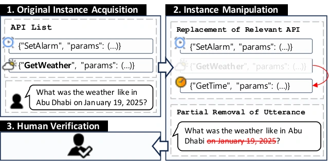

Abstract
Recent advancements in integrating large language models (LLMs) with tools have allowed the models to interact with real-world environments. However, these tool-augmented LLMs often encounter incomplete scenarios when users provide partial information or the necessary tools are unavailable. Recognizing and managing such scenarios is crucial for LLMs to ensure their reliability, but this exploration remains understudied. This study examines whether LLMs can identify incomplete conditions and appropriately determine when to refrain from using tools. To quantitatively evaluate this capability, we construct a new benchmark dataset where instances are systematically altered to simulate the ambiguous and incomplete conditions common in real-world interactions. Our experiments reveal that even state-of-the-art LLMs often struggle to identify these conditions, attempting to use tools without sufficient information or when the correct tool is unavailable. To better understand these limitations, we conduct a detailed behavioral analysis across various conditions, including implicit evaluation and scenarios where models receive feedback from previous tool invocations. Based on this analysis, we propose a novel prompting-based reasoning strategy that explicitly instructs models to assess the sufficiency of information and the availability of tools. Our proposed approach significantly enhances the models' ability to recognize incomplete conditions, resulting in more informed and contextually appropriate tool-use decisions. We believe our research contributes to advancing the reliability of LLMs, especially in real-world applications where incomplete or ambiguous information is common. Our dataset is available at Hugging Face.
Benchmark
Tool-use benchmarks usually assume that a suitable tool exists and that the user has given everything it needs. We test whether LLMs recognize when either is missing.

- Starting from APIBank and ToolBench test instances, which can all be served by the given APIs, each instance is altered in one of two ways. API replacement swaps the relevant API for one of its most similar but unsuitable APIs, found with a sentence encoder. Utterance removal uses GPT-4 to delete information the call depends on.
- Every instance is checked by hand. The final set has 1,610 instances: 900 with API replacement and 710 with utterance removal.
- Given the dialogue and the API list, a model answers whether a tool call can fulfill the request (Yes or No). Original and altered instances are both evaluated.
Structured Verification
A prompting strategy that makes the model check the request before deciding. It needs no tool execution and no fine-tuning.
- Problem understanding. Summarize the user’s goal.
- Requirement analysis. Identify the data or functionality needed to fulfill it.
- API mapping. Check whether the available APIs provide it.
- Information sufficiency. Check whether the user has given enough information for a valid call.
- Conclusion. Answer “Yes” only if a suitable API and sufficient information are both present.
Results
| API replacement | Utterance removal | |||
|---|---|---|---|---|
| Prompting | APIBank | ToolBench | APIBank | ToolBench |
| Zero-shot | 77.2 | 59.7 | 58.2 | 28.4 |
| Chain-of-Thought | 79.0 | 68.8 | 70.4 | 49.4 |
| Structured Verification (ours) | 81.4 | 74.5 | 86.9 | 76.5 |
F1 (%) for detecting incomplete conditions (“No” is the positive class), mean over the 10 open and proprietary LLMs in Table 7 of the paper.
- LLMs often decide to call a tool even when the information or the tool is missing, especially on ToolBench, whose API lists are longer and more complex.
- Structured Verification raises mean F1 on all four subsets, most on utterance removal (+28.7 on APIBank and +48.1 on ToolBench over zero-shot).
BibTeX
@article{yang2024tool,
title = {Can Tool-Augmented Large Language Models Be Aware of Incomplete Conditions?},
author = {Yang, Seungbin and Park, ChaeHun and Kim, Taehee and Choo, Jaegul},
journal = {arXiv preprint arXiv:2406.12307},
year = {2024}
}